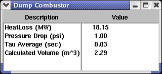

Graphical User Interface (UI)
 |
This User Interface requires the user to first specify the method of module calculation. Evaluation Mode (shown) allows the user to input the existing Volume of a combustor and the module will thereby calculate the maximum possible conversion. When Design Mode is specified, the user inputs a Desired Conversion, and the module calculates the necessary combustor geometry to achieve that specified conversion. Additional required user inputs include the Fraction Heatloss and Pressure Drop through the unit. |
Summary Data (SUM)
|  | The Summary screen shows the computed values for the Heatloss and Pressure Drop, as well as the Tau Average from the computations. When Evaluation Mode is specified in the UI, the Conversion Rate will also be displayed. When Design Mode is specified in the UI, then the Calculated Volume (as shown) will be displayed. |